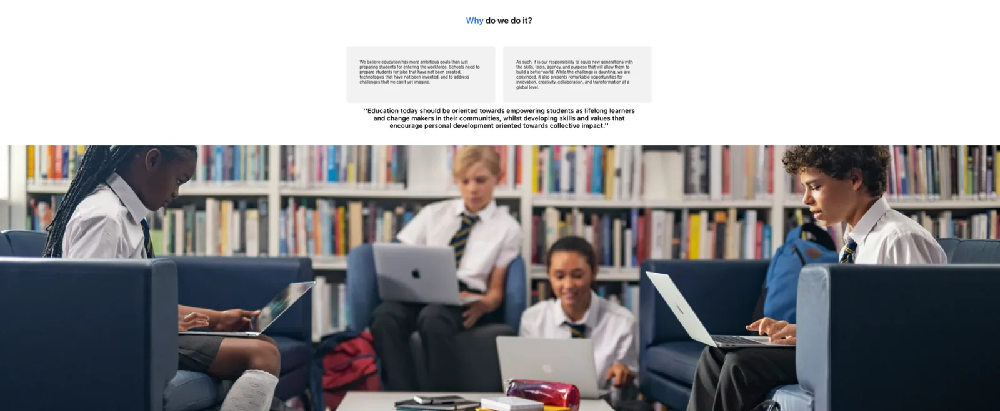
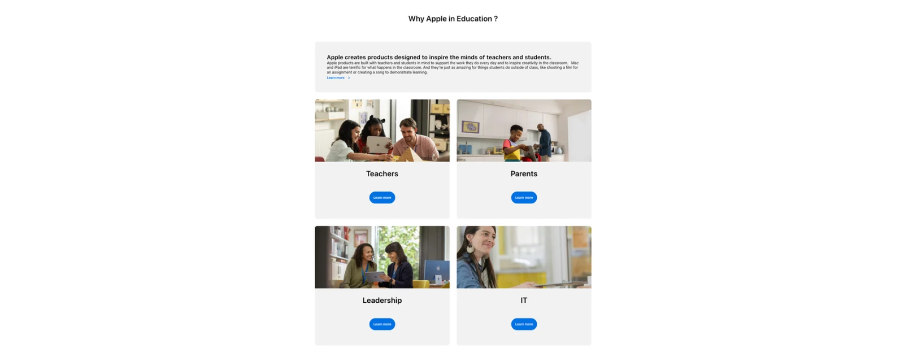
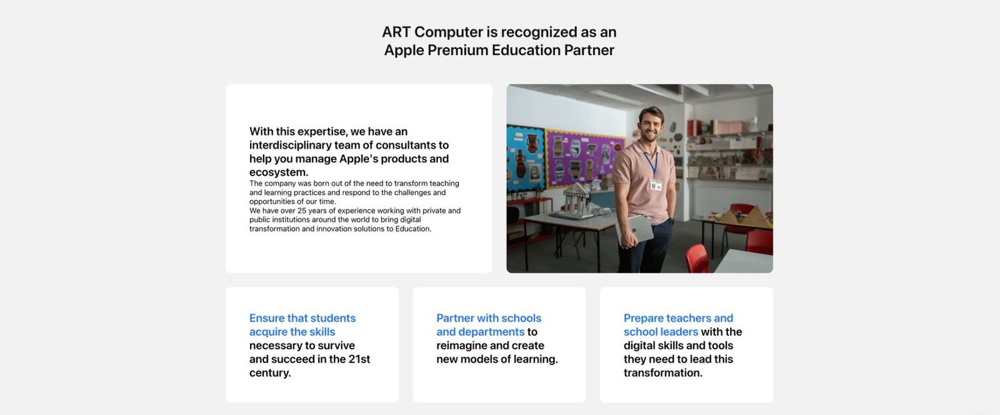
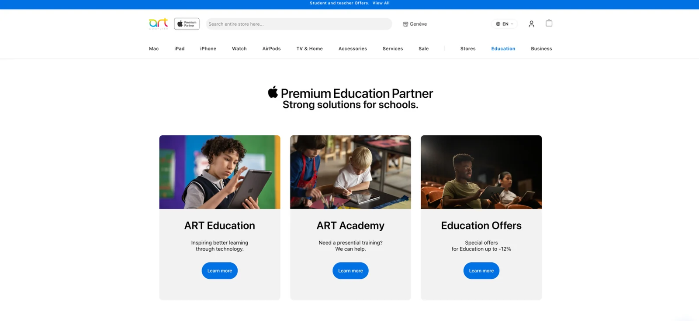

Experiencia / 2020 — Actualidad
ART
Computer
Diseño gráfico y web para comunicación, campañas y contenido digital.
↓01 / ART Computer
Diseño web
Diseño y actualización de contenido para web y e-commerce, con atención a la experiencia de uso y a la identidad visual.
Proyecto web / ART Computer
ART Education
Una selección de la página de educación: contenidos, soluciones y experiencia de navegación.




Desliza dentro de la ventana para recorrer las cuatro partes de la web.
03 / ART Computer